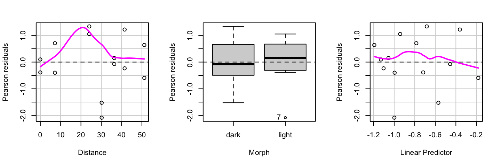

| Morph | Distance | Placed | Removed |
|---|---|---|---|
| light | 0.0 | 56 | 17 |
| dark | 0.0 | 56 | 14 |
| light | 7.2 | 80 | 28 |
| dark | 7.2 | 80 | 20 |
Modeling Binomial Counts
Logistic regression – Stat 230
Moth coloration data
J. A. Bishop studied how natural selection worked on moths in England. Trees near Liverpool England were blackened by air pollution from the mills (1970’s).
7 locations chosen, progressively farther from Liverpool
At each location, 8 trees were chosen at random and equal number of light and dark moths were glued on the trees
After 24 hours, the number of moths taken (presumably by birds) were counted for each morph
Example adapted from The Statistical Sleuth
Moth Coloration and Natural Selection
Is the proportion of moths removed different between the light and dark trees?
Does this proportion depend on distance?
Binomial response
- \(Y_i =\) the number of moths removed (i.e. successes) on each tree, in each morph
- \(Y_i =\) sum of \(n_i\) success/failure (Bernoulli) trials
- We will assume that these trials are independent
Binomial distribution
The sum of independent and identically distributed success/failure trials follows a Binomial(n, p) distribution.
Binomial logistic regression
Goal: Model \(\pi_i = {\rm P}(\text{success} | x_{1i}, x_{2i}, \ldots, x_{pi})\)
\({\rm logit}(\pi_i) = \log\left( \dfrac{\pi_i}{1- \pi_i} \right) = \beta_0 + \beta_1 x_{1i} + \cdots + \beta_p x_{pi} = \eta_i\)
\(\pi_i = \dfrac{e^{\eta_i}}{1 + e^{\eta_i}}= \dfrac{e^{\beta_0 + \beta_1 x_{1i} + \beta_2 x_{2i} + \cdots + \beta_p x_{pi}}}{1 + e^{\beta_0 + \beta_1 x_{1i} + \beta_2 x_{2i} + \cdots + \beta_p x_{pi}}}\)
EDA before modeling
The binomial logistic regression model assumes that the logit is linearly related to the predictors

Fitted model
\[\begin{aligned} \log\left( \dfrac{\widehat{\pi}_i}{1- \widehat{\pi}_i} \right) = −1.289 + 0.0185 {\tt distance}_i + 0.415 {\tt morph}_i\\ − 0.0277 {\tt distance}_i \times {\tt morph}_i \end{aligned}\]
morph = 1 for light and 0 for dark moths
Interpretations
We interpret the fitted model just like we did in binary logistic regression!
For dark moths, a 1 km increase in the distance from Liverpool is associated with about a 2% increase (\(e^{0.0185} \approx 1.02\) factor increase) in the odds of being taken.
morph = 1 for light and 0 for dark moths
Inference
We conduct inference for binomial logistic regression using the same tools as for binary logistic regression!
| term | estimate | std.error | statistic | p.value | conf.low | conf.high |
|---|---|---|---|---|---|---|
| (Intercept) | -1.129 | 0.198 | -5.705 | 0.000 | -1.527 | -0.750 |
| Distance | 0.019 | 0.006 | 3.277 | 0.001 | 0.008 | 0.030 |
| Morphlight | 0.411 | 0.274 | 1.498 | 0.134 | -0.126 | 0.952 |
| Distance:Morphlight | -0.028 | 0.008 | -3.437 | 0.001 | -0.044 | -0.012 |
- Wald tests and intervals for individual regression coefficients
- Drop-in deviance tests for sets of regression coefficients
Model assumptions
Binomial counts
Independence: observations are independent
Linearity: the log odds is a linear function of the predictors
Variance structure: the variance of a binomial random variable is \(n \pi (1 - \pi)\)
\(\Longrightarrow\) so the variance of \(Y_i\) is \(n_i \pi_i (1 - \pi_i)\) (not constant!)
Pearson residuals
\({\rm Pres}_i = \dfrac{Y_i - n_i \widehat{\pi}_i}{\sqrt{n_i \widehat{\pi}_i (1 - \widehat{\pi}_i)}}\)
For large enough \(n_i\), Pearson residuals tend to behave like they come from \(N(0,1)\)
How to use?
Plot against fitted values, predictors
Check for curvature, outliers
Pearson residuals
Evidence of a nonlinear relationship between the log odds and distance
No obvious outliers
Deviance residuals
\({\rm Dres}_i = {\rm sign}(Y_i - n_i \widehat{\pi}_i) \sqrt{2 \left[ Y_i \log \left( \dfrac{Y_i}{n_i \widehat{\pi}_i} \right) + (n_i - Y_i) \log \left( \frac{n_i - Y_i}{n_i - n_i \widehat{\pi}_i} \right) \right]}\)
For large enough \(n_i\), deviance residuals tend to behave like they come from \(N(0,1)\)
How to use?
Plot against fitted values, predictors
Check for curvature, outliers
Deviance residuals

Evidence of a nonlinear relationship between the log odds and distance
No obvious outliers
Drop-in deviance test
Do we need a quadratic term for distance?
\[\begin{align*} {\rm H_0}: & {\rm logit}(\pi_i) = \beta_0 + \beta_1 {\tt dist} + \beta_2 {\tt morph} + \beta_3 {\tt dist} \times {\tt morph}\\ {\rm H_a}: & {\rm logit}(\pi_i) = \beta_0 + \beta_1 {\tt dist} + \beta_2 {\tt morph} + \beta_3 {\tt dist} \times {\tt morph} \\ & \qquad \qquad + \beta_4 {\tt dist}^2 + \beta_45 {\tt dist}^2 \times {\tt morph} \end{align*}\]
Reduced model deviance = 13.2299
Full model deviance = 12.7283